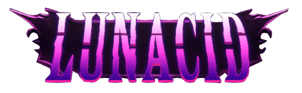

Welcome to my Lunacid fan-site!
This page is dedicated to the game Lunacid! Please be aware that I will be documenting characters, items and lore; so major spoilers are to be expected. Lunacid is at its best as you explore and discover secrets on your own; I would highly recommend avoiding reading up on any details until you have played through most of the game!
Lastly, this is just a little passion project because I'm having so much fun with the game! I'm not a professional, so don't expect maps and super detailed descriptions about stats. I'm just documenting things as I see them in my own playthroughs!
Originally written as of beta 0.9.7
Partially updated as of release 1.0.2